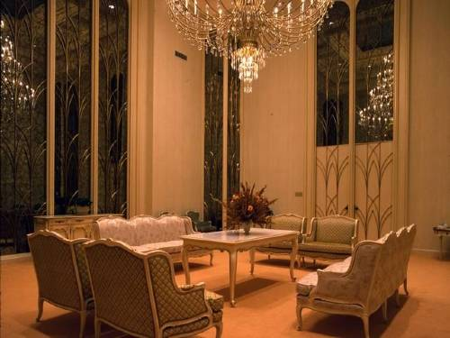
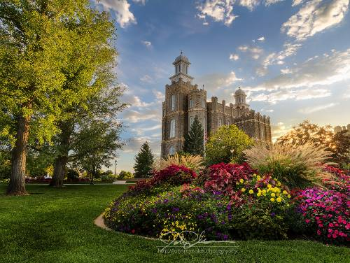
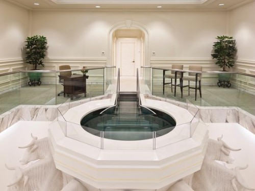

Plan your next trip with ease!
Temple Interior & Exterior
- Entrance into the Temple.
- Recommend Desk.
- Endowment Room: Life Has A Purpose.
- Celestial Room: A Glimpse Into Heaven.
- Sealing Room: Families Can Continue Forever.
- Baptistry: Blessings for Ancestors.
- Temple Grounds: Gardens.
- Temple Distribution Center.
Specialized Services
- A family search center that supports family search and ordinance work.
- A playroom and low-cost, short-term babysitting services for the children of patrons.
- Long-term stay accommodations in kitchenette suites for full-time temple missionaries.
- Free access to changing rooms and bathroom facilities for temple patrons who have traveled far and need to change to and from church clothes.
Temple Facts
- The Logan Utah Temple was the second temple built in Utah.
- Logan Utah Temple was originally named the Logan Temple.
- The Logan Utah Temple was the only temple dedicated by President John Taylor.
- The Logan Utah Temple was the first temple built with progressive-style muraled ordinance rooms for live-acting presentation of the endowment ceremony.

Logan Temple: Celestial Room

Logan Temple: Gardens

Logan Temple: Baptistry